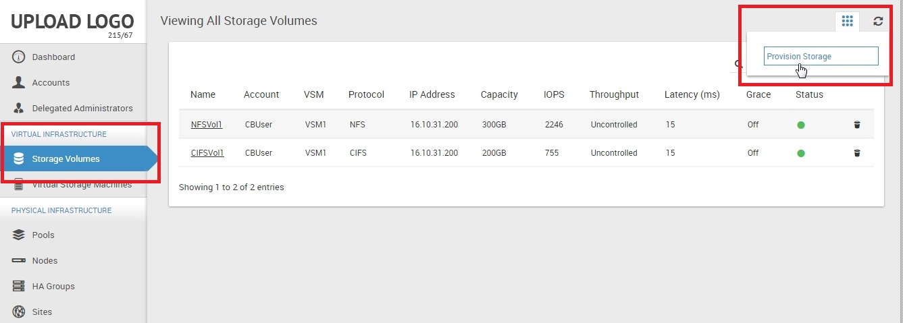
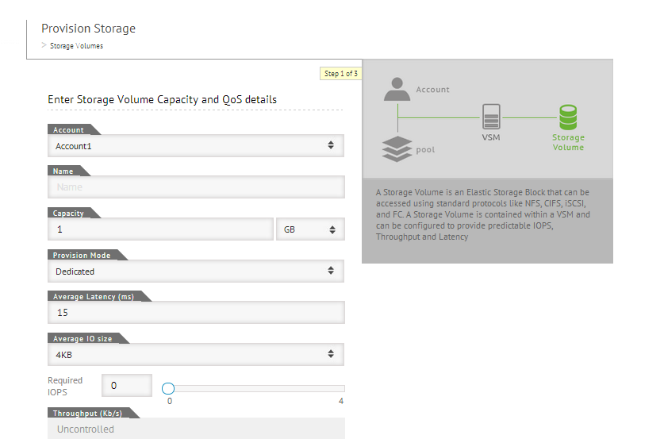
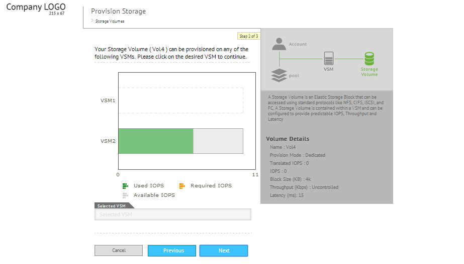
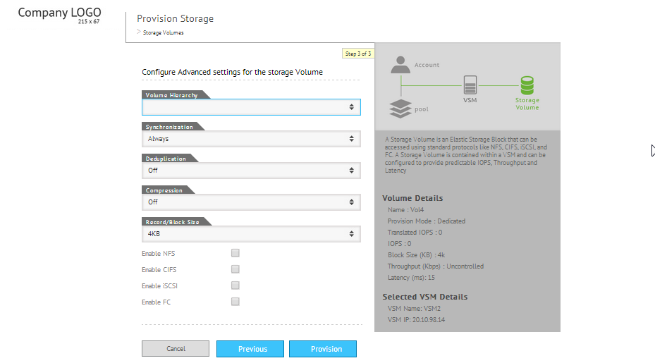

Provisioning storage
- Before you provision a Storage Volume, you must create a VSM.
- The maximum supported size of the Storage Volume depends on the available capacity of VSM.
- There is no limit to the number of Storage Volumes that you can create. But the composite capacity of the created Storage Volumes must be less than or equal to the capacity of the VSM they belong to. For example, if the total capacity of the VSM is 1 TB, then you can create a Storage Volume with the capacity of 1 TB or multiple storage volumes where the total capacity of all volumes is less than or equal to 1 TB.
- You can enable both compression and deduplication on the same Storage Volume.
- File system storage (NFS and CIFS) works together on the same Storage Volume, but block level storage (iSCSI or FC) does not.
- You can back up Storage Volume by creating snapshots and then rolling back when required. For details, see
Note: By default, ElastiStor Storage Volume is thin provisioned. You can expand the Storage Volume up to the size of the Pool, provided the Pool has available storage.
Use the Storage Volumes page (ElastiCenter >Navigation Pane > Storage Volumes) to provision storage.
- Click Actions Icon Select Provision Storage.

The Add Storage Volume page appears.

- Specify the following details:
| Field | Description |
| Account | Account for which you provision the storage. |
| Name | Unique name for the storage. |
| Capacity | Amount of disk space to be allocated. |
| Provision Mode | Shared or Dedicated. For details, see the section Difference between Shared and Dedicated in
|
| Block Size | Block size of the volume. |
| Average Latency | Desired average latency in milliseconds per I/O. Latency is the round trip time per I/O request-response. |
| Control IOPS | Select the required IOPS using the slider. Qos can be enforced either throughonly IOPS or only Throughput. |
| Control Throughput | Select the required throughput using the slider. Qos can be enforced either throughonly IOPS or only Throughput. |
- Click Next and then select the VSM on which you want to provision the Storage Volume.

- Click Next. The screen to specify the advanced settings appears.

- Specify the following details:
| Field | Description |
| Volume Hierarchy | The VSM on which the Storage Volume is mounted. |
| Record Size | The block size to which data has to be divided. |
| Synchronization | Leave the default settings as it is. |
| Deduplication | If ON, new data is deduplicated. |
| Compression | If ON, new data is compressed. |
| Mount Point | (Applies only for NFS and CIFS) Specify the Storage Volume mount point for the client to use the storage. |
| Enable NFS | Select to access the Storage Volume using NFS protocol. |
| Enable CIFS | Select to access the Storage Volume using CIFS protocol. |
| Enable iSCSI | Select to access the Storage Volume using iSCSI protocol. |
- Click Provision.
Note:Disconnect all associated clients before you delete an iSCSI Storage Volume.